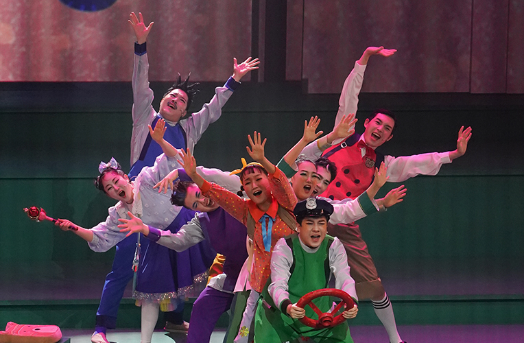

Children’s Musical <Mermaid Hwangok>
- Time
- 8. 25.(Fri) ~ 26.(Sat) Weekdays 19:30, Weekends 11:15
- Venue
- Yeji-dang Hall
- Ticket Price
- S seat 20,000won A seat 10,000won
- Cast/Direct
- Busan National Gugak Center Traditional Music Orchestra
- Audience Age
- 48 months above
An adventure of secret agent! Mermaid Hwangok and her friends begins the project to protect Busan!
The musical drama for children features the folktale about the mermaid statue in Busan Dongbaek Island. Each act shows different location and sceneries in Busan, such as Huinyeoul village, Kkangkkangi village, Undersea palace, seashores, mountain hill, and the stairways connecting to the village. Mermaid princess Hwangok invites children to the adventure.
Program
The Act One The coming of Princess Hwangok The Act Two Friends in White Rapids Elementary School The Act Three The Turtle Battleship, Secret Pirate Heros The Act Four The War to the Marine Rubbish The Act Five Mermaid Hwangok loves a man, becomes a woman Epilogue
